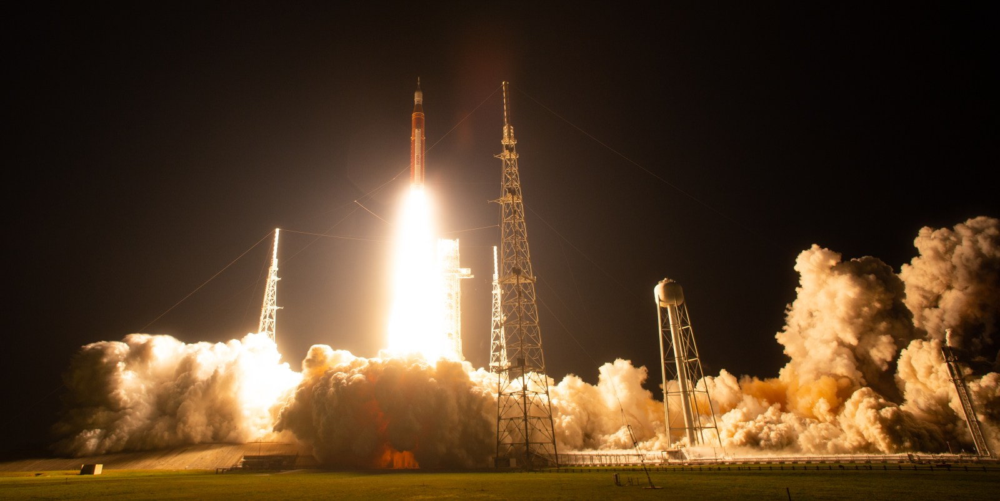

Il 16 novembre 2022 la partenza di Artemis I mette fine a una lunga attesa e comincia una verifica più difficile da riassumere di un lancio. SLS deve funzionare, Orion deve vivere nello spazio profondo e poi rientrare a una velocità che richiede una protezione termica adatta al ritorno lunare. A bordo non ci sono astronauti: la missione serve anche a costruire le condizioni per portarli.

La gioia della partenza e il lavoro che resta
Per chi aveva seguito anni di rinvii, il distacco dalla rampa aveva un significato evidente. La macchina esisteva, gli impianti avevano sostenuto la sequenza e Orion stava andando verso la Luna. Ma il risultato del lanciatore non rispondeva a tutte le domande della missione.
Una capsula deve mantenere energia e controllo, conoscere la propria posizione e sostenere le manovre. Le comunicazioni e le risorse vanno seguite mentre cambiano distanza e orientamento. Un volo senza equipaggio permette di spingere alcune verifiche senza esporre persone, ma deve raccogliere dati utili al successivo volo umano.
Il percorso attorno alla Luna
Orion segue una missione che comprende passaggi lunari e una permanenza su un’orbita retrograda distante. Non è il profilo di Artemis II e non comprende un allunaggio. La scelta consente di provare propulsione, navigazione e comportamento durante una missione lunga.
Le fotografie con la Terra lontana danno una misura emotiva della distanza. Per l’ingegneria, quella distanza significa collegamenti, tempi e possibilità di intervento differenti. Ogni apparato deve essere verificato dentro il contesto nel quale lavorerà, non soltanto perché ha acceso una spia corretta in un laboratorio.
Il ritorno dell’11 dicembre
La missione si conclude l’11 dicembre 2022 dopo circa 25,5 giorni. Orion ha percorso più di 1,4 milioni di miglia lungo il viaggio complessivo, una quantità diversa dalla distanza massima dalla Terra. La capsula rientra e viene recuperata nel Pacifico.
Il ritorno è il risultato più importante per il futuro equipaggio. Il veicolo non deve soltanto raggiungere una destinazione: deve sopravvivere alla fase in cui dissipa una grande quantità di energia. Recuperarlo permette di confrontare modelli, strumenti e materiali realmente esposti.
Trasmissione NASA del 16 novembre 2022, conservata sul servizio originale. Apri il video.
Il veicolo recuperato non chiude l’indagine
Una missione riuscita può contenere anomalie. Lo scudo termico presenta perdita di materiale che richiederà studio. La differenza fra l’esito del viaggio e la qualità del comportamento dei componenti è decisiva: il recupero permette di vedere ciò che la sola telemetria non avrebbe descritto nello stesso modo.
Non è corretto cancellare il successo di Artemis I per l’esistenza di quel problema. Non è corretto nemmeno usare il successo per dichiarare irrilevante il problema. Il volo ha eseguito una verifica e la verifica ha prodotto sia fiducia sia lavoro ulteriore.
Il passaggio successivo non è quindi soltanto aggiungere quattro sedili occupati. È decidere quali risultati siano trasferibili al volo umano, quali modifiche servano e quale margine resti. Lo scudo diventa uno dei punti nei quali il programma deve mostrare come costruisce la propria sicurezza.
Fonti pubbliche e tracce
- NASA, Artemis I. Missione del 2022, senza equipaggio.
- NASA, Splashdown: Orion Returns, 11 dicembre 2022. Risultati della missione e recupero.
- NASA, Artemis I Mission Timeline. Cronologia e immagini NASA della missione.
- NASA, Orion Heat Shield Findings, 5 dicembre 2024. Causa della perdita di materiale e decisione sulla traiettoria Artemis II.